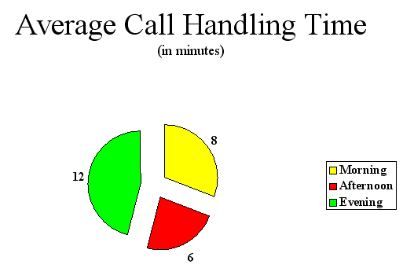
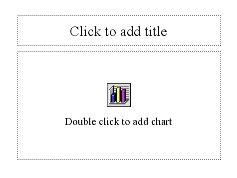
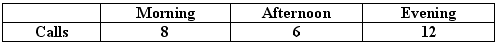
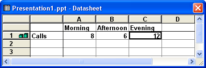
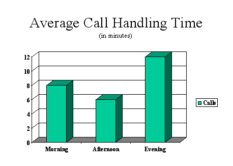
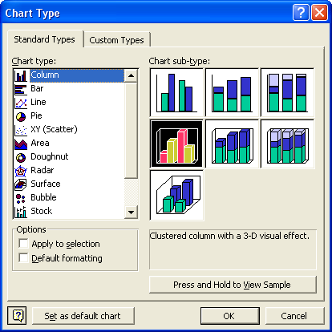
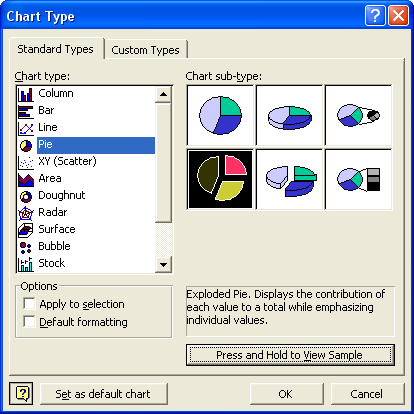

Free
powerpoint
Tutorials
|
Free
powerpoint
Tutorials
|
|
 home home |
Stay at Home and Learn | ||||
PowerPoint Pie Charts |
|||||
|
Charts 1, 2, 3, 4, 5, 6, 7, 8, 9, 10, 11, 12 Flow Charts Tables
Slide Number three on our presentation is another chart. This time, instead of a bar chart, we have a simple Pie Chart. This is what your chart will look like when it's finished:  This Pie Chart shows information about telephone calls. It's meant to show how well (or not) each shift is doing. The morning shift spend 8 minutes per call talking to customers, the afternoon shift 6 minutes, and the evening shift 12 minutes. Again, this is a simple chart that would tell an audience fairly quickly what they needed to know. To add the Pie Chart to your presentation, insert a new slide as before. First, click Insert > New Slide. Select the Chart template, either from the dialogue box for PowerPoint 2000, or the Task Pane in PowerPoint2003. You'll see the template appear on the main PowerPoint stage:  Click inside the Title area at the top and add the following title: Average Call Handling Time The font used is Arial, and the first line is 44 points in size, while the second line is 20. When you've added the Title for slide 3, "Double click to add chart", just like it says. You should see the same default slide appear as for our first slide. The Datasheet will appear, as well. Delete Rows 2 and 3, just like you did for the first chart. Then enter the following information in the Datasheet:  When you're finished, your Datasheet should look like this:  And your chart will look like this on the PowerPoint main stage:  The default is a 3D Bar chart. What we want is a Pie chart. To turn your Bar chart into a Pie chart, right click anywhere on the chart itself. (Right clicking on any of the bars should do it. If you can see white squares or circles surrounding your chart instead of black squares, double click the chart.) When you right click, you should see this context menu:
Select Chart Type from the menu, and the following dialogue box will appear:  The dialogue box shows all the chart types running down the left hand side. When you click a Chart Type, you'll see the various options for that chart. Click on Pie, and your dialogue box should change to this:  As you can see, there are 6 Pie charts available. Click the fourth one, the one highlighted in black in the image above. This is call an Exploded Pie chart. An exploded pie chart is one where the segments are separated. Click OK and your chart will look like this:
It doesn't look too bad as it is. But we can format it a little. The first thing we can do is to change the colours of the segments, which we'll do in the next lesson.
|
||||